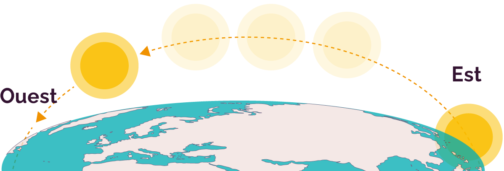

Le jeu du labyrinthe
Mifa est perdue dans le jeu du labyrinthe.
Doré est en dehors du labyrinthe.
Il a un plan, qui contient des indices pour aider Mifa à sortir.
Ils vont devoir s’entraider pour y parvenir…
Pour prendre un bon départ, Mifa doit aller à gauche.
Sais-tu où se trouve la gauche de Mifa ?
Clique sur le bon bouton.
Mifa doit maintenant prendre un escalier qui monte.
Quel escalier choisir ?
Aide Mifa en cliquant sur le bouton correspondant à l'escalier qui monte.
Après avoir monté l'escalier, Mifa arrive dans une pièce.
Elle doit y trouver un indice.
Doré lui explique qu’elle doit chercher une photo…
Il y en a plusieurs.
– Dans les étagères qui se trouvent
devant la statue du cavalier, précise Doré.
Il faut d'abord comprendre ce que signifient « devant » et « derrière » : sur lequel de ces boutons Mifa se trouve-t-elle devant le cavalier ?
Mifa sait désormais dans quelles étagères regarder.
Mais il y a encore deux photos.
– La bonne photo doit se trouver au-dessus de livres, lui rappelle Doré.
« Au-dessus » et « au-dessous » permettent d'indiquer la position d'un objet par rapport à un autre.
Ici, on cherche la position d'une photo par rapport à des livres.
Peux-tu aider Mifa à choisir la photo qui se trouve au-dessus des livres ?
Maintenant qu'elle a trouvé la bonne photo, Mifa doit y découvrir une information dont elle a besoin pour sortir du labyrinthe.
– D'après le plan, il faut identifier une statue à l'arrière-plan.
– Mais c’est quoi, l’arrière-plan ? s’énerve Mifa.
On distingue les objets proches ou lointains du point de vue de celui qui regarde en les situant sur des plans.
Le plus proche s’appelle le premier plan, derrière lui (les objets ou personnes un peu plus éloignées) il y a le second plan, puis le plan le plus éloigné, qui s’appelle l’arrière-plan.
Aide Mifa : clique sur l’image qui correspond à l'arrière-plan de cette photo.
– Mais il y a plusieurs statues à l’arrière-plan ! se désespère Mifa.
– Il faut choisir celle qui est la plus proche de la fenêtre, lui dit Doré.
Sais-tu laquelle de ces statues est la plus proche de la fenêtre ?
– D’accord, dit Mifa. C'est donc la statue du fou que je dois retrouver !
– À présent, Mifa, tu dois descendre l’escalier…
– Et maintenant, je vais où ? demande Mifa.
Je monte devant moi ?
Je descends sur le côté ?
– Zut, dit Doré. Le plan ne précise pas quel escalier tu dois emprunter !

– Comment faire ? s’inquiète Mifa. Je suis perdue !
– Devant toi, il y a des statues ? demande Doré.
– Les statues sont sur le côté !
– Mais de quel côté parles-tu ?

Peux-tu aider Mifa à se souvenir où sont sa droite et sa gauche ?
– C’est à ma droite !
– Hum… grommelle Doré. Et si tu te tournes vers la droite ?
– Mais oui, je suis bête ! s'écrie Mifa.
Si je me tourne, les statues sont devant moi !
– Parfait, alors rejoins-les, lui dit Doré.

– Les statues sont disposées comme sur la photo ! s’écrie Mifa.
– Et la statue du fou est à l’arrière-plan !
– Parfait, répond Doré.
Il doit y avoir une cache à l’arrière de la statue.
– Où ça ? demande Mifa.
– Le plan dit qu’il y a une cachette sous la statue, répond Doré.
– Il y a quelque chose dedans, s'écrie Mifa.
– C’est une clé !
– Elle va te permettre de sortir du labyrinthe ! dit Doré.
– La clé doit ouvrir cette porte-là ! s’écrie Mifa en montrant une porte près d'elle.
– Non, tu dois d’abord retourner vers l’escalier, puis prendre le couloir qui se trouve à côté.
Mifa va dans le couloir à côté de l’escalier.
– Tu es allée trop loin !! lui dit Doré.
Recule un peu.
– Comment ça, reculer ?
Mais dans quel sens dois-je aller ?
Aide Mifa en cliquant sur le bouton qui donne la bonne réponse :
– Enfin ! s’écrie Mifa en arrivant dans le couloir.
Je vois deux portes !
– Tu dois aller vers la porte la plus éloignée de toi ! répond Doré.
Peux-tu aider Mifa en cliquant sur le bouton qui désigne la porte la plus éloignée d'elle ?
Mifa ouvre la porte avec la clé qu’elle a trouvée sous la statue.
Mifa est contente d’être enfin sortie du labyrinthe.

Mais où est Doré ?
– Je suis à l’Est du labyrinthe, répond Doré.
L’Est est l’un des 4 points cardinaux que l'on utilise pour se repérer dans l’espace.
– On ne peut pas dire « à droite » ou « à gauche », plutôt ? râle Mifa.
– Eh bien non, je ne sais pas dans quel sens tu es tournée, répond Doré.
– Qu’est-ce que ça change ?

– Mifa, où le soleil se trouve-t-il ?
À ta droite ou à ta gauche ?
– Il est à ma droite ! répond Mifa.
– Maintenant, retourne-toi : le soleil est-il toujours à ta droite ?
– Non ! Maintenant c’est mon ombre, qui est à droite !
La droite et la gauche se définissent par rapport à quelque chose ou quelqu'un, et peuvent changer selon le sens dans lequel on observe la situation.
– Bon, soupire Mifa, et comment dois-je faire pour trouver l’Est ?
Partout dans le monde, le soleil se lève à l’Est et se couche à l’Ouest
– Haaa… On est en fin d’après-midi, donc le soleil penche du côté de l’Ouest ! s’écrie Mifa.
– Et comme Doré m’a dit qu’il était à l’Est du labyrinthe, je dois avancer en tournant le dos au soleil.
– Te voilà ! s’écrie Doré.
Tu as gagné le jeu du labyrinthe !